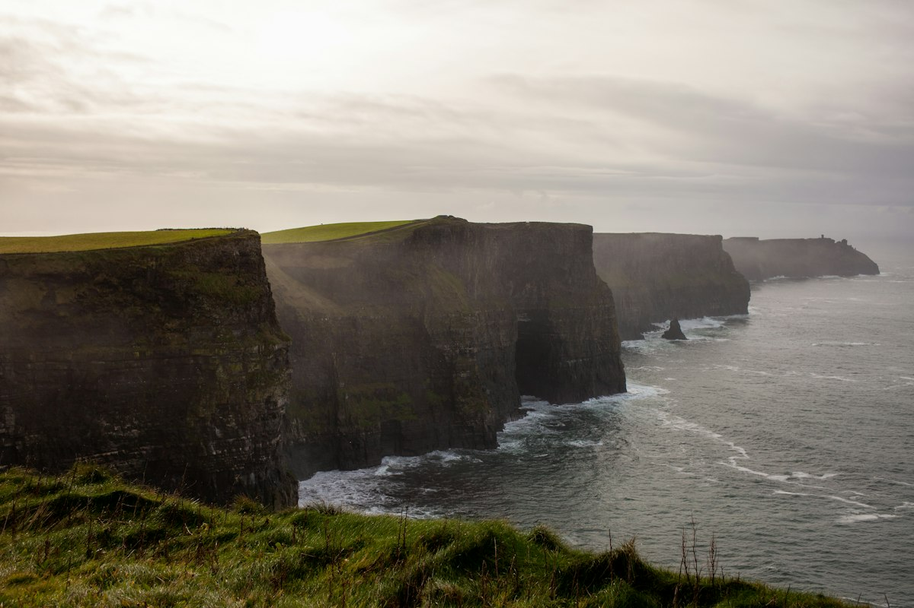

A Georgian weekend in Dublin
Location: Dublin City
Cobbled lanes, bookshops and a long, lively supper.
Category: City
Duration: 2 days
Price: €89 per person
Enquire about this tripHolidays and short trips around Ireland
Choose a trip around Ireland. These sample prices are per person.
Showing 15 experiences.

Location: Dublin City
Cobbled lanes, bookshops and a long, lively supper.
Category: City
Duration: 2 days
Price: €89 per person
Enquire about this tripLocation: County Clare
Follow the Atlantic edge as evening light spills over the cliffs.
Category: Coastal
Duration: Half day
Price: €42 per person
Enquire about this tripLocation: County Galway
Unplug beside a peat fire with mountain paths beyond your door.
Category: Countryside
Duration: 2 nights
Price: €145 per person
Enquire about this tripLocation: Galway City
Meet the makers, musicians and storytellers of the Latin Quarter.
Category: Cultural
Duration: 3 hours
Price: €35 per person
Enquire about this tripLocation: Inis Mór, Galway
Cycle quiet roads between stone walls, sea views and a tea stop.
Category: Coastal
Duration: Full day
Price: €78 per person
Enquire about this tripLocation: County Wicklow
Meet farm animals, try a pony ride and picnic in the orchard.
Category: Family
Duration: 3 hours
Price: €48 per person
Enquire about this tripLocation: Cork City
Sample local favourites and hear the stories behind beloved stalls.
Category: City
Duration: Half day
Price: €55 per person
Enquire about this tripLocation: County Donegal
Take the scenic road to sea stacks, far-flung beaches and a pub lunch.
Category: Coastal
Duration: Full day
Price: €125 per person
Enquire about this tripLocation: County Meath
Explore centuries of Irish history among stone walls and gardens.
Category: Cultural
Duration: Full day
Price: €64 per person
Enquire about this tripLocation: County Kerry
Find a gentle shore walk, wildlife to spot and room to run around.
Category: Family
Duration: Half day
Price: €39 per person
Enquire about this tripLocation: County Mayo
Wake to birdsong, rolling hills and a breakfast of local produce.
Category: Countryside
Duration: 1 night
Price: €118 per person
Enquire about this tripLocation: Waterford City
Step inside independent studios and discover the city’s craft.
Category: Cultural
Duration: 4 hours
Price: €72 per person
Enquire about this tripLocation: County Cork
Paddle a sheltered harbour, spot old forts and float in for coffee.
Category: Coastal
Duration: 3 hours
Price: €95 per person
Enquire about this tripLocation: Kilkenny City
Follow medieval lanes, riverside paths and a very good bakery trail.
Category: City
Duration: Full day
Price: €52 per person
Enquire about this tripLocation: County Laois
Take an easy forest trail with nature clues and a hot chocolate finish.
Category: Family
Duration: 2 hours
Price: €29 per person
Enquire about this trip